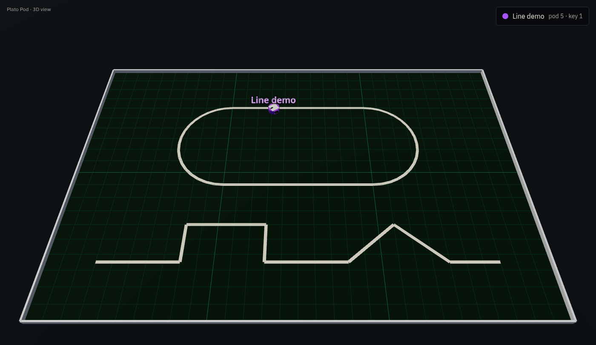

PID line following
Room GFYFYJ, built for ZEIT3222 Control Engineering. Notebook: pid-line-following.ipynb.
Tape is drawn on the floor: an oval and a course with square corners and sharp bends. Each pod carries a line sensor, five reflectance cells under its nose that read 0 to 1 with noise, and reports where the line is across the pod (offset_m, positive to the left). Students write the controller.
- The pod drives itself onto the oval by feedback on its pose, at a place of its own so several students share the course.
- P only at 5 cm/s, then the same at 8 cm/s.
- D, smoothed: the textbook cure for snaking, and why it does not cure it here.
- I, capped against windup: the steady error on the curves.
- Your turn: the fastest lap, predicting through the delay, the course with sharp bends, the five raw cells.
| Controller (measured on the server) | Mean error | Line lost |
|---|---|---|
| P, kp = 40, 5 cm/s | 2.5 mm | never |
| P, kp = 40, 8 cm/s | 7.3 mm | never |
| PD, kp = 40, kd = 0.5 | 2.5 mm | never |
| PI, kp = 40, ki = 10 | 2.8 mm | never |
The lesson is a real one: a reading is a tenth of a second old when it arrives and commands cross the internet, so the delay, not the gains, limits the speed, and D and I need a better signal than this one to help. A teacher can draw new courses on the console's Mission sheet (Set up activities).
